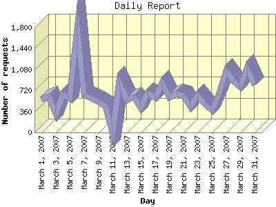

Report generated by Analog 6.0 and Report Magic 2.21
|
Web Server Statistics for "Harish Narayanan (hnarayan) - March 2007" Report generated by Analog 6.0 and Report Magic 2.21 |
The Daily Report identifies the activity for each day within the reporting period. Remember that one page hit can result in several server requests as the images for each page are loaded.

| Day | Number of requests | Number of bytes transferred | Percentage of the bytes | Percentage of the requests | |
|---|---|---|---|---|---|
| 1. | March 1, 2007 | 573 | 47.730 MB | 3.11% | 2.81% |
| 2. | March 2, 2007 | 614 | 37.521 MB | 2.44% | 3.01% |
| 3. | March 3, 2007 | 319 | 113.298 MB | 7.38% | 1.56% |
| 4. | March 4, 2007 | 656 | 64.444 MB | 4.20% | 3.21% |
| 5. | March 5, 2007 | 585 | 23.293 MB | 1.52% | 2.86% |
| 6. | March 6, 2007 | 1,798 | 50.761 MB | 3.31% | 8.80% |
| 7. | March 7, 2007 | 638 | 38.893 MB | 2.53% | 3.12% |
| 8. | March 8, 2007 | 595 | 40.442 MB | 2.63% | 2.91% |
| 9. | March 9, 2007 | 517 | 110.053 MB | 7.17% | 2.53% |
| 10. | March 10, 2007 | 445 | 21.214 MB | 1.38% | 2.18% |
| 11. | March 11, 2007 | 0 | 0.000 B | 0.00% | 0.00% |
| 12. | March 12, 2007 | 858 | 47.722 MB | 3.11% | 4.20% |
| 13. | March 13, 2007 | 560 | 32.667 MB | 2.13% | 2.74% |
| 14. | March 14, 2007 | 606 | 163.832 MB | 10.67% | 2.97% |
| 15. | March 15, 2007 | 423 | 18.602 MB | 1.21% | 2.07% |
| 16. | March 16, 2007 | 670 | 81.048 MB | 5.28% | 3.28% |
| 17. | March 17, 2007 | 597 | 21.784 MB | 1.42% | 2.92% |
| 18. | March 18, 2007 | 845 | 29.480 MB | 1.92% | 4.14% |
| 19. | March 19, 2007 | 605 | 41.514 MB | 2.70% | 2.96% |
| 20. | March 20, 2007 | 660 | 54.099 MB | 3.52% | 3.23% |
| 21. | March 21, 2007 | 622 | 38.775 MB | 2.53% | 3.04% |
| 22. | March 22, 2007 | 442 | 19.890 MB | 1.30% | 2.16% |
| 23. | March 23, 2007 | 636 | 32.974 MB | 2.15% | 3.11% |
| 24. | March 24, 2007 | 480 | 21.957 MB | 1.43% | 2.35% |
| 25. | March 25, 2007 | 378 | 32.377 MB | 2.11% | 1.85% |
| 26. | March 26, 2007 | 653 | 36.401 MB | 2.37% | 3.20% |
| 27. | March 27, 2007 | 1,059 | 97.568 MB | 6.36% | 5.18% |
| 28. | March 28, 2007 | 890 | 57.148 MB | 3.72% | 4.36% |
| 29. | March 29, 2007 | 785 | 29.744 MB | 1.94% | 3.84% |
| 30. | March 30, 2007 | 1,099 | 84.819 MB | 5.53% | 5.38% |
| 31. | March 31, 2007 | 817 | 44.974 MB | 2.93% | 4.00% |
Most active day March 6, 2007 : 423 pages sent. 1,798 requests handled. 53,226,571.00 served.
Daily average: 680 requests handled. 51.167 MB served.
This report was generated on May 2, 2007 10:33.
Report time frame March 1, 2007 00:03 to March 31, 2007 23:52.
| Web statistics report produced by: | |
 Analog 6.0 Analog 6.0 |  Report Magic 2.21 Report Magic 2.21 |